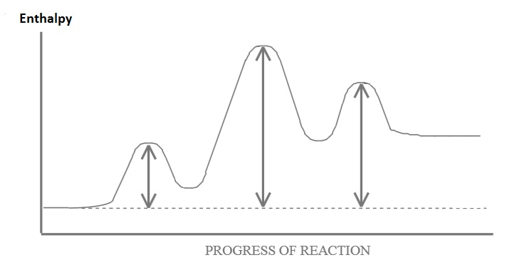

Press Ctrl-Z to toggle the answers.
Chapter 14
Apr 6, 2023
name: ______________________________________
1) What is the order of the reaction represented by the graph below?

A) second
B) zeroth
C) third
D) first*
2) The following reaction is a second order reaction. If the rate constant is 0.628 M
-1s
-1, and the original concentration of O
3 is 1.59x10
-2 M, then what is the half-life?
2 O3 (g) ➞ 2 O2 (g)
A) 39.5 s
B) 100. s*
C) 1.10 s
D) 0.0127 s
3) What generally happens with a reaction when the temperature is increased?
A) The rate constant (K) increases, causing the rate of the reaction to increase*
B) The rate constant (K) decreases, causing the rate of the reaction to increase
C) The rate constant (K) increases, causing the rate of the reaction to decrease
D) The rate constant (K) decreases, causing the rate of the reaction to decrease.
4) The energy diagram below is for a 3 step reaction. Which step is the rate determining step?

A) 1st step
B) 2nd step*
C) 3rd step
5) Using the balanced chemical equation below, calculate the rate of rate reaction with a rate in change of concentration of P
2O
5 equal to 10.6 M/s.
4 P + 5 O2 ➞ 2 P2O5
A) 112 M/s
B) 10.6 M/s
C) 5.30 M/s*
D) 21.2 M/s
6) What are biological catalysts called?
A) Substrates
B) Exfoliators
C) Inhibitors
D) Enzymes*
7) Given the following proposed mechanism, what is the rate law for the reaction?
A
2 + B
➞ A2B (overall reaction)
| step 1 |
A2 ➞ 2A |
fast |
| step 2 |
2A + B ➞ A2B |
slow |
A) Rate = \( K[A_2][B] \)*
B) Rate = \( K[A_2]^2[B] \)
C) Rate = \( K[A_2]^{1/2}[B] \)
D) Rate = \( \frac{K[A_2]^2[B]}{2} \)
8) The reaction A + B ➞ C + D, has a rate constant of 7.04 × 10-4 M-1s-1 at 0°C, what is the overall order of the reaction?
A) 2*
B) 3
C) 0
D) 1
9) What is are the units for the k in the following rate law.
Rate = k[A][B][C]
A) M/s or Ms-1
B) 1/(M2S) or M-2S-1*
C) 1/s or s-1
D) 1/(M3s) or M-3s-1
10) Which of the following expressions accurately depicts the rate of this reaction?
Pb(OH)2 + 2 HCl ➞ PbCl2 (s) + 2 H2O (l)
A) \( -\frac{Δ[Pb(OH)_2]}{Δt} \)*
B) \( +\frac{Δ[HCl]}{Δt} \)
C) \( +\frac{1}{2}\frac{Δ[HCl]}{Δt} \)
D) \( -\frac{Δ[HCl]}{Δt} \)
11) Which of these two pathways represents the catalyzed pathway?

A) A
B) B*
C) All of the above.
D) None of the above.
12) Given the initial rate data below, what is the rate law for the following reaction?
A (g) + B (g)
➞ C (g)
| Trial |
[A] |
[B] |
rate (M/s) |
| 1 |
1.0 |
1.0 |
8.24x10-8 |
| 2 |
1.0 |
2.0 |
8.24x10-8 |
| 3 |
2.0 |
1.0 |
6.59x10-7 |
A) rate = K[B]3
B) rate = K[A]3*
C) rate = K[A]9
D) rate = K[A][B]
13) A reaction is found to have an activation energy of 44.3 kJ/mol, and a frequency factor (A) of 1.12x1010 s-1. What is the rate constant of the reaction at 258 K?
A) 1.10x1010
B) 12.0*
C) 15.0
D) 1.04x1019
14) Identify the statement that is true.
A) Catalysts only affect the activation energy and not the rate constant
B) Adding a catalyst increases the rate constant*
C) A catalyst has no affect on the rate of a reaction
D) The rate constant is unaffected by temperature changes
15) The decomposition of ammonia on a hot platinum surface is zero-order reaction, and has a rate constant of 2.94x10-3 Ms-1. If the initial concentration of ammonia is 6.51 M, what is the concentration of ammonia after 424 s?
A) 8.12 M
B) -0.915 M
C) 1.87 M
D) 5.26 M*
16) What is the overall order of the following reaction?
2 NO (g) + O2 (g) ➞ 2 NO2 (g); Rate = k[NO]2[O2]
A) first
B) second
C) zeroth
D) third*
17) (SLO 2.4) What rate is unimolecular?
A) Rate = K[A]*
B) Rate = K[A][B]2
C) Rate = K[A][B]
D) Rate = K[A][B][C]
18) (SLO 2.2) Given the following balanced equation, determine the rate of reaction with respect to [H2].
N2 (g) + 3 H2 (g) ➞ 2 NH3 (g)
A) Rate = \( -\frac{3}{2} \frac{Δ[H_2]}{Δt} \)
B) Rate = \( +\frac{3}{1} \frac{Δ[H_2]}{Δt} \)
C) Rate = \( -\frac{2}{3} \frac{Δ[H_2]}{Δt} \)
D) Rate = \( -\frac{1}{3} \frac{Δ[H_2]}{Δt} \)*
19) (SLO 2.5) For a reaction that follows the general rate law, Rate = K[A]3[B]2, what will happen to the rate of reaction if the concentration of A is increased by a factor of 5?
A) The rate will increase by a factor of 130*
B) The rate will decrease by a factor of 1/130
C) The rate will increase by a factor of 15
D) The rate will decrease by a factor of 1/15
20) (SLO 2.6) At 386 K a reaction is found to have a rate constant of 36300 (3 sf) M-1s-1, at 138 K the reaction is found to have a rate constant of 7.93 M-1s-1. What is the activation energy for this reaction.
A) -15.1 kJ/mol
B) 6.54 kJ/mol
C) 15.1 kJ/mol*
D) -6.54 kJ/mol
21) (SLO 2.1) If the rate of
disappearance of H
2 in the gas phase reaction is 0.135 M/s, then the rate of
appearance of HBr is _______ M/s
2 HBr (g) ➞ H2 (g) + Br2 (g)
A) 0.27 M/s*
B) 0.0675 M/s
C) 0.135 M/s
D) 7.41 M/s
22) (SLO 2.3) What is the overall order of the following reaction, given the rate law?
X + 4 Y ➞ 4 Z Rate = k[X][Y]
A) 2*
B) 1
C) 4
D) 5
23) (SLO 2.7) Which of the following reactions would you predict to have the largest orientation factor?
A) NH3 (g) + BCl3 (g) ➞ H3N-BCl3 (g)
B) H (g) + F (g) ➞ HF (g)*
C) NOCl (g) + NOCl (g) ➞ 2 NO (g) + Cl2 (g)
D) Br2 (g) + H2C-CH2 (g) ➞ H2BrC-CBrH2 (g)